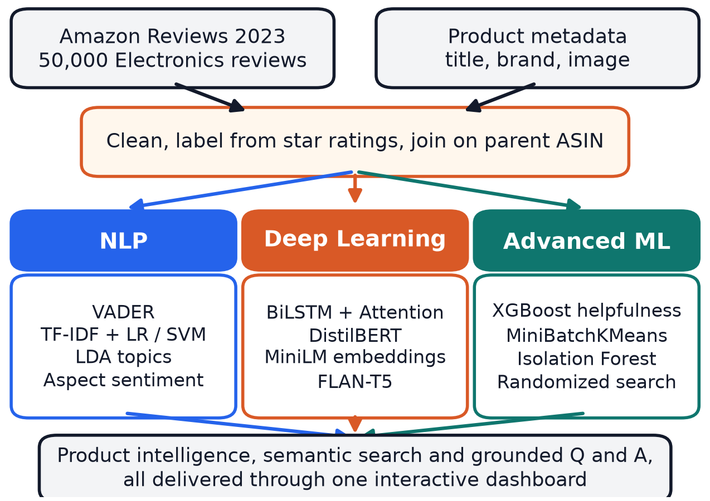
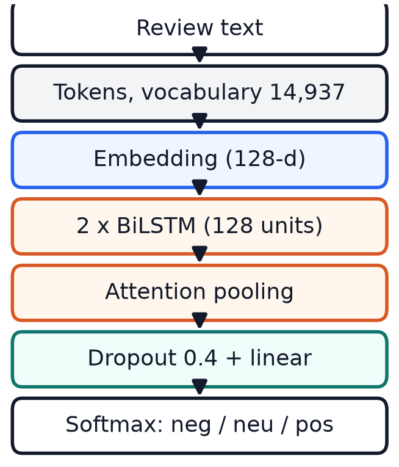
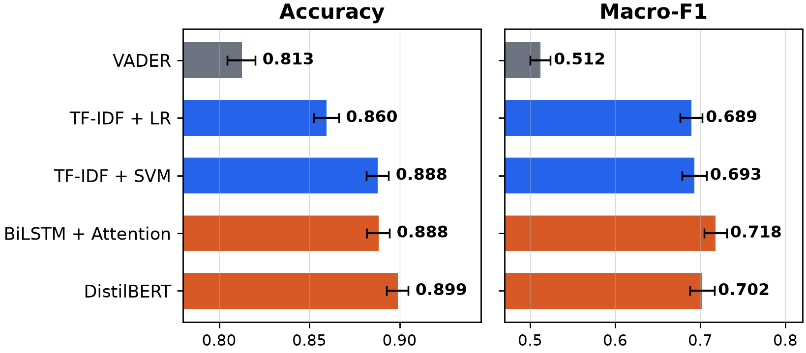
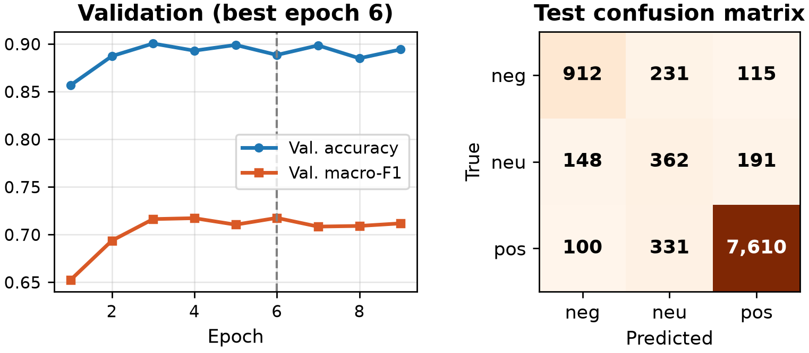
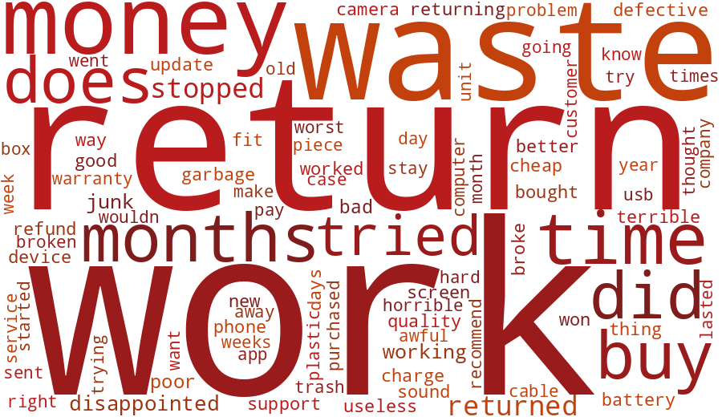
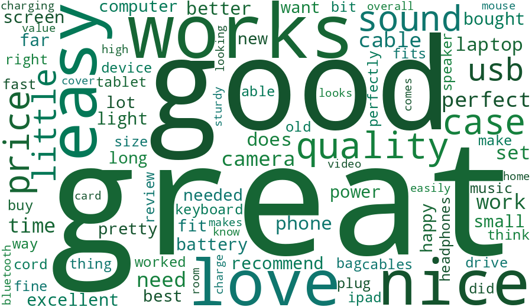
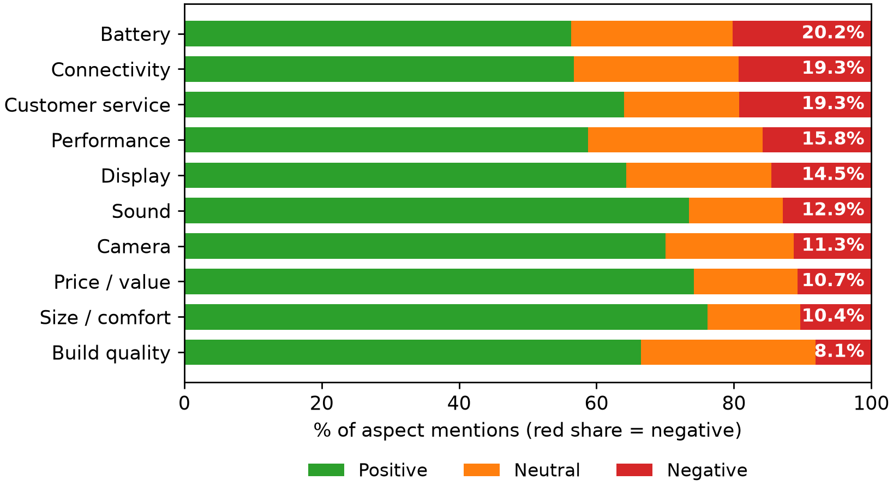
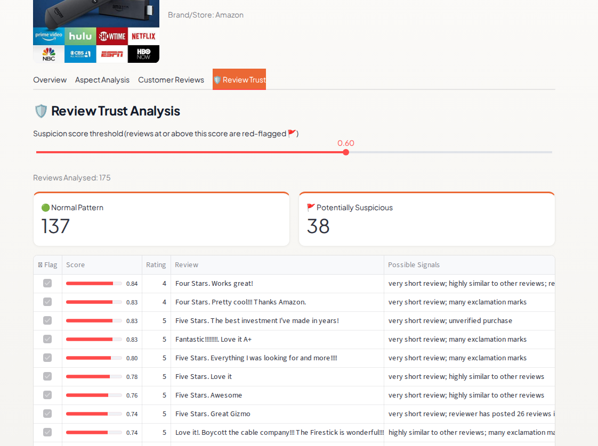
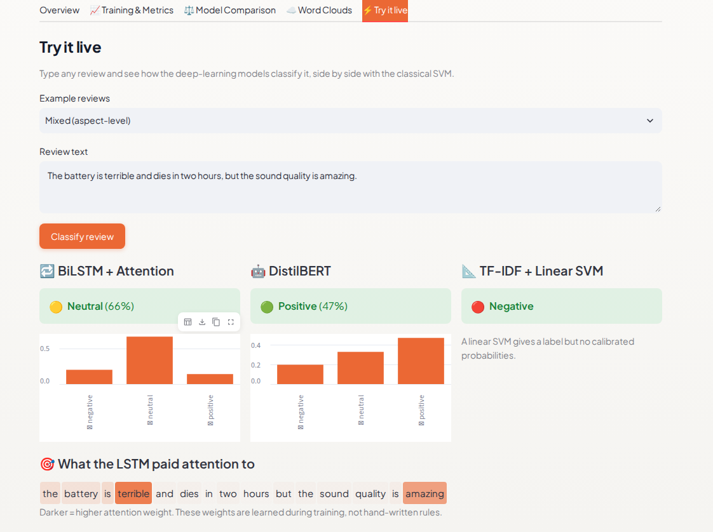

A popular product can have thousands of free-text reviews that nobody can read in full. Buyers ask "should I buy this?"; sellers ask "what should we improve?"
Amazon Reviews 2023, cleaned and labelled from star ratings (4-5 positive, 3 neutral, 1-2 negative). Product name, brand and image joined by parent ASIN. One shared 40,000 / 10,000 train and test split.

Reviews and metadata feed three branches, then product intelligence and grounded question answering.
BiLSTM + Attention trained from scratch: 14,937-word vocabulary, 2 x 128 bidirectional LSTM, 2.57 M parameters, class-weighted loss, about 7 minutes on a laptop GPU.
DistilBERT fine-tuned on 6,000 reviews (CPU).
The Deep Learning Lab page adds training curves, a confusion matrix, word clouds and a live classifier that highlights the words the LSTM attended to.

| Model | Accuracy | Macro-F1 | F1 neutral |
|---|---|---|---|
| VADER | .813 | .512 | .080 |
| TF-IDF + LR | .860 | .689 | .400 |
| TF-IDF + SVM | .888 | .693 | .382 |
| BiLSTM + Attention | .888 | .718 | .446 |
| DistilBERT | .899 | .702 | .368 |

95% bootstrap intervals. BiLSTM beats the SVM on macro-F1 (+0.025, significant); DistilBERT is best on accuracy.
| LSTM variant (3 seeds, mean) | Accuracy | Macro-F1 |
|---|---|---|
| Full (attention + class weights) | .891 | .722 |
| No class weights | .899 | .709 |
| Mean pooling instead of attention | .889 | .715 |

155 of the LSTM's 1,116 test errors are confident, and many are label noise: the stars disagree with the text.

Negative

Positive
Words weighted by how characteristic they are of each class: "return", "waste", "money" versus "easy", "love", "perfect".

Product-scoped retrieval (MiniLM, top 5 reviews) plus FLAN-T5, with a similarity floor: weak evidence means "not enough information".
Semantic retrieval beat TF-IDF on paraphrased aspect queries (0.54 vs 0.32 aspect-mention rate at 5).

Review Trust: unsupervised Isolation Forest flags 4,999 reviews (10%) as potentially suspicious, with a threshold slider and reasons per review. No fake-review accuracy is claimed.

Deep Learning Lab: live classifier with attention